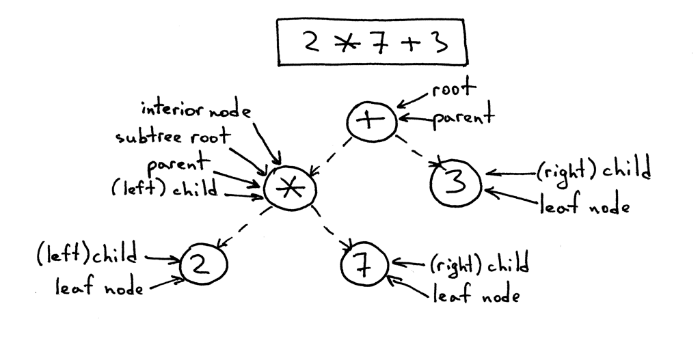
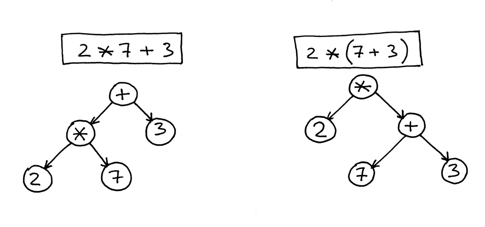
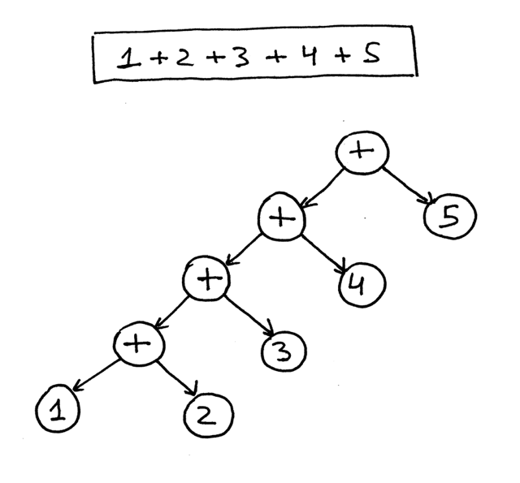
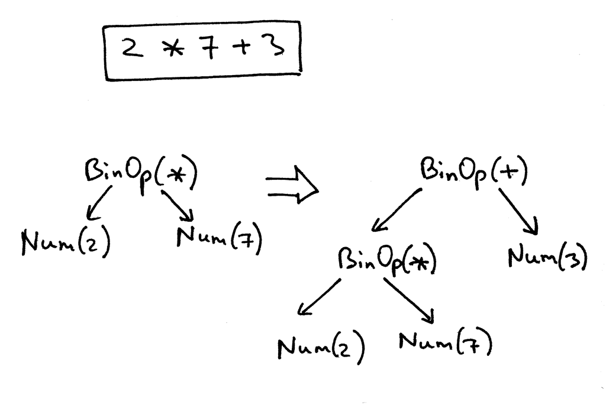
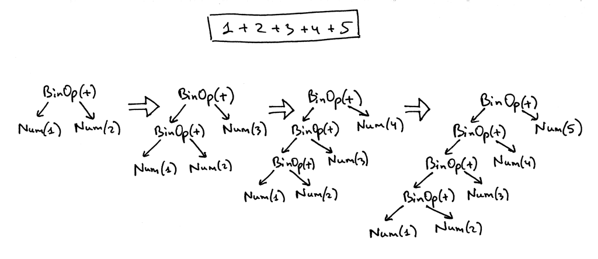
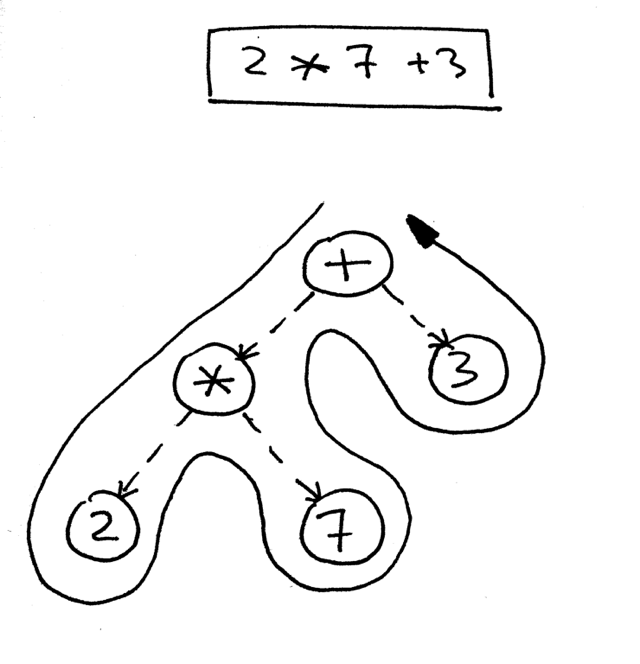
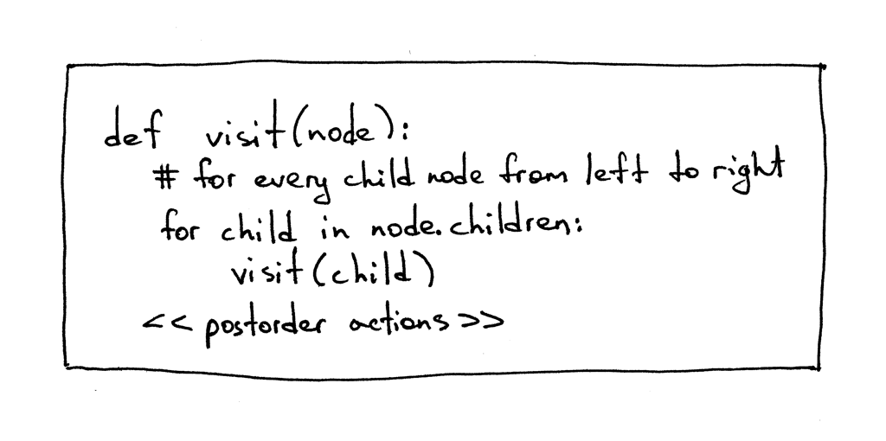
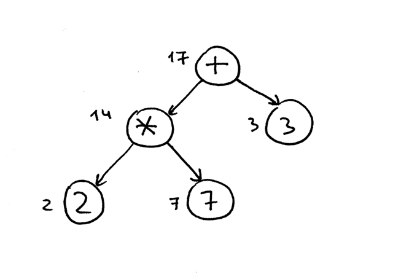
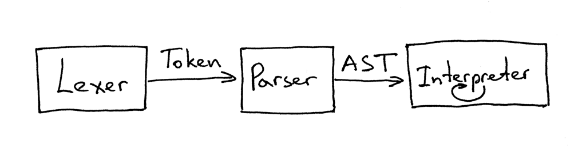
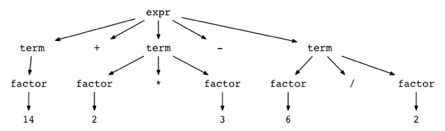

Up until now, we had our interpreter and parser code mixed together and the interpreter would evaluate an expression as soon as the parser recognized a certain language construct like addition, subtraction, multiplication, or division. Such interpreters are called syntax-directed interpreters. They usually make a single pass over the input and are suitable for basic language applications. In order to analyze more complex Pascal programming language constructs, we need to build an intermediate representation (IR). Our parser will be responsible for building an IR and our interpreter will use it to interpret the input represented as the IR.
It turns out that a tree is a very suitable data structure for an IR.
Let’s quickly talk about tree terminology.
- A tree is a data structure that consists of one or more nodes organized into a hierarchy.
- The tree has one root, which is the top node.
- All nodes except the root have a unique parent.
- The node labeled * in the picture below is a parent. Nodes labeled 2 and 7 are its children; children are ordered from left to right.
- A node with no children is called a leaf node.
- A node that has one or more children and that is not the root is called an interior node.
- The children can also be complete subtrees. In the picture below the left child (labeled *) of the + node is a complete subtree with its own children.
- In computer science we draw trees upside down starting with the root node at the top and branches growing downward.
Here is a tree for the expression 2 * 7 + 3 with explanations:

The IR we’ll use throughout the series is called an abstract-syntax tree AST. But before dig deeper, let’s talk about parse trees briefly. Though we’re not going to use parse trees for our interpreter and compiler, they can help you understand how your parser interpreted the input by visualizing the execution trace of the parser. We’ll also compare them with ASTs to see why ASTs are better suited for intermediate representation than parse trees.
So, what is a parse tree? A parse-tree (sometimes called a concrete syntax tree) is a tree that represents the syntactic structure of a language construct according to our grammar definition. It basically shows how your parser recognized the language construct or, in other words, it shows how the start symbol of your grammar derives a certain string in the programming language.
The call stack of the parser implicitly represents a parse tree and it’s automatically built in memory by your parser as it is trying to recognize a certain language construct.
Let’s take a look at a parse tree for the expression 2 * 7 + 3:
In the picture above you can see that:
- The parse tree records a sequence of rules the parser applies to recognize the input.
- The root of the parse tree is labeled with the grammar start symbol.
- Each interior node represents a non-terminal, that is it represents a grammar rule application, like expr, term, or factor in our case.
- Each leaf node represents a token.
As already mentioned, we’re not going to manually construct parser trees and use them for our interpreter but parse trees can help you understand how the parser interpreted the input by visualizing the parser call sequence.
Now let’s talk about abstract-syntax trees. This is the intermediate representation (IR) that we’ll heavily use throughout the rest of the series. It is one of the central data strictures for out interpreter and future compiler projects.
Here are the main differences between ASTs and Parse trees:
- ASTs uses operators/operations as root and iterior nodes and it uses operands as their children.
- ASTs do not use interior nodes to represent a grammar rule, unlike the parse tree does.
- ASTs don’t represent every detail from the real syntax (that’s why they’re called abstract) - no rule nodes and no parentheses.
- ASTs are dense compared to a parse tree for the same language construct.
So, what is an abstract syntax tree? An abstract syntax tree (AST) is a tree that represents the abstract syntactic structure of a language construct where each interior node and the root node represents an operator, and the children of the node represent the operands of that operator.
ASTs are more compact than parse trees. Just take a look at an AST and a parse tree for the expression 7 + (( 2 + 3 )). The following AST is much smaller than the parse tree, but still captures the essence of the input:

How to encode operator precendence in an AST? In order to encode the operator precdence in AST to represent that “X happens before Y”, you just need to put X lower in the tree than Y.
More examples:


From the pictures above, it’s obvious that operators with higher precedence end up being lower in the tree.
Now it’s time to write some code to implement different AST node types and modify our parser to generate an AST tree composed of those nodes.
First, we’ll create a base node class called AST that other classes will inherit from:
class AST(object):
passASTs represent the operator-operand model.
So far, we have four operators and integer operands. The operators are addition, subtraction, multiplication, and division. We could have created a separate class to represent each operator like AddNode, SubNode, MulNode, and DivNode, but instead we’re going to have only one BinOp class to represent all four binary operators (a binary operator is an operator that operates on two operands):
class BinOp(AST):
def __init__(self, left, op, right):
self.left = left
self.token = self.op = op
self.right = rightThe parameters to the constructor are left, op, right, where left and right point correspondingly to the node of the left operand and to the node of the right operand. Op holds a token for the operator itself: Token(PLUS, ‘+’) for the plus operator, Token(MINUS, ‘-‘) for the minus operator, and so on.
To represent integers in our AST, we’ll define a class Num that will hold an INTEGER token and the token’s value:
class Num(AST):
def __init__(self, token):
self.token = token
self.value = token.valueAs you’ve noticed, all nodes store the token used to create the node. This is mostly for convenience and it will come in handy in the future.
Here is an example:
# 2 * 7 + 3
mul_token = Token(MUL, '*')
plus_token = Token(PLUS, '+')
mul_node = BinOp(
left=Num(Token(INTEGER, 2)),
op=mul_token,
right=Num(Token(INTEGER, 7))
)
add_node = BinOp(
left=mul_node,
op=plus_token,
right=Num(Token(INTEGER, 3))
)
Here is our modified parser code that builds and returns an AST as a result of recognizing the input (an arithmetic expression):
class AST(object):
pass
class BinOp(AST):
def __init__(self, left, op, right):
self.left = left
self.token = self.op = op
self.right = right
class Num(AST):
def __init__(self, token):
self.token = token
self.value = token.value
class Parser(object):
def __init__(self, lexer):
self.lexer = lexer
# set current token to the first token taken from the input
self.current_token = self.lexer.get_next_token()
def error(self):
raise Exception('Invalid syntax')
def eat(self, token_type):
# compare the current token type with the passed token
# type and if they match then "eat" the current token
# and assign the next token to the self.current_token,
# otherwise raise an exception.
if self.current_token.type == token_type:
self.current_token = self.lexer.get_next_token()
else:
self.error()
def factor(self):
""" factor : INTEGER | LPAREN expr RPAREN """
token = self.current_token
if token.type == INTEGER:
self.eat(INTEGER)
return Num(token)
elif token.type == LPAREN:
self.eat(LPAREN)
node = self.expr()
self.eat(RPAREN)
return node
def term(self):
""" term : factor ((MUL | DIV))* """
node = self.factor()
while self.current_token.type in (MUL, DIV):
token = self.current_token
if token.type == MUL:
self.eat(MUL)
elif token.type == DIV:
self.eat(DIV)
node = BinOp(left=node, op=token, right=self.factor())
return node
def expr(self):
"""
expr : term ((PLUS | MINUS) term)*
term : factor ((MUL | DIV) factor)*
factor : INTEGER | LPAREN expr RPAREN
"""
node = self.term()
while self.current_token.type in (PLUS, MINUS):
token = self.current_token
if token.type == PLUS:
self.eat(PLUS)
elif token.type == MINUS:
self.eat(MINUS)
node = BinOp(left=node, op=token, right=self.factor())
return node
def parse(self):
return self.expr()If you look at the parser code above you can see that the way it builds nodes of an AST is that each BinOp node adopts the current value of the node variable as its left child and the result of a call to a term or factor as its right child, so it’s effectively pushing down nodes to the left.
Here is a visual representation how the parser gradually builds an AST for the expression 1 + 2 + 3 + 4 + 5:

How do you navigate the tree to properly evaluate the expression represented by that tree? You do that by using a postorder traversal - a special case of depth-first traversal - which starts at the root node and recursively visits the children of each node from left to right. The postorder traversal visits nodes as far away from the root as fast as it can.

Here is a pseudo code for the postorder traversal where <<postorder actions>> is a placeholder for action like addition, substraction, multiplication, or division for a BinOp node or a simpler action like returning the integer value of a Num node.

The reason we’re going to use a postorder traversal for our interpreter is that first, we need to evaluate interior nodes lower in the tree because they represent operators with higher precedence and second, we need to evaluate operands of an operator before applying the operator to those operands.
In the picture below, you can see that with postorder traversal we first evaluate the expression 2 * 7 and only after that we evaluate 14 + 3, which gives us the correct result, 17:

Okay, let’s write some code to visit and interpret the abstract syntax trees built by our parser, shall we?
Here is the source code that implements the Visitor pattern:
class NodeVisitor(object):
def visit(self, node):
method_name = 'visit_' + type(node).__name__
visitor = getattr(self, method_name, self.generic_visit)
return visitor(node)
def generic_visit(self, node):
raise Exception('No visit_{} method'.format(type(node).__name__))And here is the source code of our Interpreter class that inherits from the NodeVisitor class and implements different methods that have the form _visit_NodeType_, where NodeType is replaced with the node’s class name like BinOp, Num, and so on:
class Interpreter(NodeVisitor):
def __init__(self,parser):
self.parser = parser
def visit_BinOp(self, node):
if node.op.type == PLUS:
return self.visit(node.left) + self.visit(node.right)
elif node.op.type == MINUS:
return self.visit(node.left) - self.visit(node.right)
elif node.op.type == MUL:
return self.visit(node.left) * self.visit(node.right)
elif node.op.type == DIV:
return self.visit(node.left) / self.visit(node.right)
def visit_Num(self, node):
return node.valueThere are two interesting things about the code that are worth mentioning:
First, the visitor code that manipulates AST nodes is decoupled from the AST nodes themselves. You can see that none of the AST node classes (BinOp and Num) provide any code to manipulate the data stored in those nodes. That logic is encapsulated in the Interpreter class that implements the NodeVisitor class.
Second, instead of a giant if statement in the NodeVisitor’s visit method like the following codes:
def visit(node):
node_type = type(node).__name__
if node_type == 'BinOp':
return self.visit_BinOp(node)
elif node_type == 'Num':
return self.visit_Num(node)
elif ...
# ...
# or
def visit(node):
if isinstance(node, BinOp):
return self.visit_BinOp(node)
elif isinstance(node, Num):
return self.visit_Num(node)
elif ...The NodeVisitor’s visit method is very generic and dispatches calls to the appropriate method based on the node type passed to it. In order to make use of it, our interpreter inherits from the NodeVisitor class and implements necessary methods. So if the type of a node passed to the visit method is BinOp, then the visit method will dispatch the call to the visit_BinOp_ method, and if the type of a node is Num, then the visit method will dispatch the call to the _visit_Num method, and so on.
Spend some time studying this approach (standard Python module ast uses the same mechanism for node traversal) as we will be extending our interpreter with many new _visit_NodeType_ methods in the future.
The generic_visit_ method is a fallback that raises an exception to indicate that it encountered a node that the implementation class has no corresponding _visit_NodeType method for.
Okay, here is the complete code of our new interpreter for your convenience:
""" SPI - Simple Pascal Interpreter """
###############################################################################
# #
# LEXER #
# #
###############################################################################
# Token types
#
# EOF (end-of-file) token is used to indicate that
# there is no more input left for lexical analysis
INTEGER, PLUS, MINUS, MUL, DIV, LPAREN, RPAREN, EOF = (
'INTEGER', 'PLUS', 'MINUS', 'MUL', 'DIV', '(', ')', 'EOF'
)
class Token(object):
def __init__(self, type, value):
self.type = type
self.value = value
def __str__(self):
"""String representation of the class instance.
Examples:
Token(INTEGER, 3)
Token(PLUS, '+')
Token(MUL, '*')
"""
return 'Token({type}, {value})'.format(
type=self.type,
value=repr(self.value)
)
def __repr__(self):
return self.__str__()
class Lexer(object):
def __init__(self, text):
# client string input, e.g. "4 + 2 * 3 - 6 / 2"
self.text = text
# self.pos is an index into self.text
self.pos = 0
self.current_char = self.text[self.pos]
def error(self):
raise Exception('Invalid character')
def advance(self):
"""Advance the `pos` pointer and set the `current_char` variable."""
self.pos += 1
if self.pos > len(self.text) - 1:
self.current_char = None # Indicates end of input
else:
self.current_char = self.text[self.pos]
def skip_whitespace(self):
while self.current_char is not None and self.current_char.isspace():
self.advance()
def integer(self):
"""Return a (multidigit) integer consumed from the input."""
result = ''
while self.current_char is not None and self.current_char.isdigit():
result += self.current_char
self.advance()
return int(result)
def get_next_token(self):
"""Lexical analyzer (also known as scanner or tokenizer)
This method is responsible for breaking a sentence
apart into tokens. One token at a time.
"""
while self.current_char is not None:
if self.current_char.isspace():
self.skip_whitespace()
continue
if self.current_char.isdigit():
return Token(INTEGER, self.integer())
if self.current_char == '+':
self.advance()
return Token(PLUS, '+')
if self.current_char == '-':
self.advance()
return Token(MINUS, '-')
if self.current_char == '*':
self.advance()
return Token(MUL, '*')
if self.current_char == '/':
self.advance()
return Token(DIV, '/')
if self.current_char == '(':
self.advance()
return Token(LPAREN, '(')
if self.current_char == ')':
self.advance()
return Token(RPAREN, ')')
self.error()
return Token(EOF, None)
###############################################################################
# #
# PARSER #
# #
###############################################################################
class AST(object):
pass
class BinOp(AST):
def __init__(self, left, op, right):
self.left = left
self.token = self.op = op
self.right = right
class Num(AST):
def __init__(self, token):
self.token = token
self.value = token.value
class Parser(object):
def __init__(self, lexer):
self.lexer = lexer
# set current token to the first token taken from the input
self.current_token = self.lexer.get_next_token()
def error(self):
raise Exception('Invalid syntax')
def eat(self, token_type):
# compare the current token type with the passed token
# type and if they match then "eat" the current token
# and assign the next token to the self.current_token,
# otherwise raise an exception.
if self.current_token.type == token_type:
self.current_token = self.lexer.get_next_token()
else:
self.error()
def factor(self):
"""factor : INTEGER | LPAREN expr RPAREN"""
token = self.current_token
if token.type == INTEGER:
self.eat(INTEGER)
return Num(token)
elif token.type == LPAREN:
self.eat(LPAREN)
node = self.expr()
self.eat(RPAREN)
return node
def term(self):
"""term : factor ((MUL | DIV) factor)*"""
node = self.factor()
while self.current_token.type in (MUL, DIV):
token = self.current_token
if token.type == MUL:
self.eat(MUL)
elif token.type == DIV:
self.eat(DIV)
node = BinOp(left=node, op=token, right=self.factor())
return node
def expr(self):
"""
expr : term ((PLUS | MINUS) term)*
term : factor ((MUL | DIV) factor)*
factor : INTEGER | LPAREN expr RPAREN
"""
node = self.term()
while self.current_token.type in (PLUS, MINUS):
token = self.current_token
if token.type == PLUS:
self.eat(PLUS)
elif token.type == MINUS:
self.eat(MINUS)
node = BinOp(left=node, op=token, right=self.term())
return node
def parse(self):
return self.expr()
###############################################################################
# #
# INTERPRETER #
# #
###############################################################################
class NodeVisitor(object):
def visit(self, node):
method_name = 'visit_' + type(node).__name__
visitor = getattr(self, method_name, self.generic_visit)
return visitor(node)
def generic_visit(self, node):
raise Exception('No visit_{} method'.format(type(node).__name__))
class Interpreter(NodeVisitor):
def __init__(self, parser):
self.parser = parser
def visit_BinOp(self, node):
if node.op.type == PLUS:
return self.visit(node.left) + self.visit(node.right)
elif node.op.type == MINUS:
return self.visit(node.left) - self.visit(node.right)
elif node.op.type == MUL:
return self.visit(node.left) * self.visit(node.right)
elif node.op.type == DIV:
return self.visit(node.left) / self.visit(node.right)
def visit_Num(self, node):
return node.value
def interpret(self):
tree = self.parser.parse()
return self.visit(tree)
def main():
while True:
try:
text = input('calc >')
except EOFError:
break
if not text:
continue
lexer = Lexer(text)
parser = Parser(lexer)
interpreter = Interpreter(parser)
result = interpreter.interpret()
print(result)
if __name__ == '__main__':
main()On this article, we’ve learned about parse trees, ASTs, how to construct ASTs and how to traverse them to interpret the input represented by those ASTs. You’ve also modified the parser and the interpreter and split them apart. The current interface between the lexer, parser, and the interpreter now looks like this:

You can read that as “The parser gets tokens from the lexer and then returns the generated AST for the interpreter to traverse and interpret the input.”
Next, we’ll add assignment and unary operators.
Appendix
You can see how parse trees look like for different arithmetic expressions by trying out a small utility called genptdot.py to help you visualize them. To use the utility you first need to install Graphviz package and after you’ve run the following command, you can open the generated image file parsetree.png and see a parse tree for the expression you passed as a command line argument:
$ python genptdot.py "14 + 2 * 3 - 6 / 2" > parsetree.dot && dot -Tpng -o parsetree.png parsetree.dotHere is the generated image parsetree.png for the expression 14 + 2 * 3 - 6 / 2:

Play with the utility a bit by passing it different arithmetic expressions and see what a parse tree looks like for a particular expression.